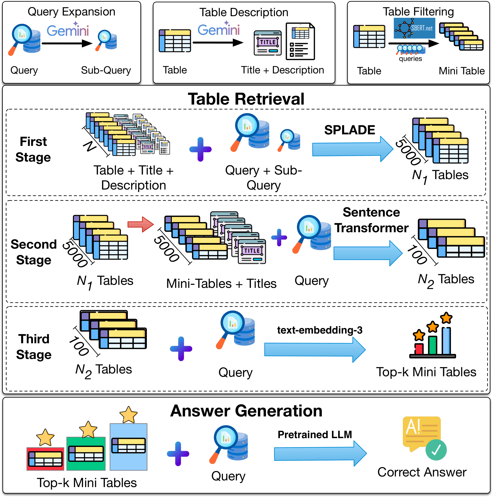

Browse what CRAFT retrieves
Search a benchmark question and see the tables CRAFT returns. The final ranking comes from Stage 3; open Stage 1 or Stage 2 to see how the shortlist was narrowed along the way.
Start typing a question above to see CRAFT's retrieved tables.
Try:
Or drive it from your terminal — craft tui
Menu-driven and fully interactive: choose a config, a pipeline scope, and a question, then browse ranked tables. The full ranking is written to a readable results file as you go.
Install & launch in four commands
# extras: [serve] web UI · [tui] terminal app · [openai] Stage 3 pip install "craft-tabqa[serve,tui]" # build the index + row embeddings for your corpus (once) craft preprocess --config configs/my_dataset.yaml # retrieve the most relevant tables for each query craft retrieve --config configs/my_dataset.yaml # explore interactively craft serve --config configs/my_dataset.yaml # web UI at http://localhost:8000 craft tui # menu-driven terminal app
Custom-dataset format and full docs are in the GitHub repository.
What CRAFT is
CRAFT finds the tables that answer a question. Given a large collection of tables and a natural-language question, it returns a short, ranked list of the most relevant tables — which you can then read, or hand to a language model to produce an answer. It is training-free: it composes off-the-shelf models into a pipeline, so there is no fine-tuning to run and nothing dataset-specific to label. That makes it straightforward to point at a new table collection of your own.
Three progressively precise stages
SPLADE
Lexical retrieval scans the whole corpus cheaply. Working over LLM-enriched table text and expanded queries, it casts a wide net so the answer table stays in the running.
Sentence Transformer
Each candidate is compressed to a mini-table of its most relevant rows, then scored by meaning rather than shared words — trimming noise and sharpening the shortlist.
Final reranking
A stronger model — reranker or embedding, open-source or API — runs only on the finalists to set the final order. This stage is plug-and-play, so you pick the model that fits your setup.
Query expansion
An LLM decomposes each question into sub-questions online, broadening the lexical signal the sparse retriever can match.
Table enrichment
An LLM writes a title and description for every table offline, bridging the vocabulary gap between tables and natural-language questions.
Mini-tables
The most query-relevant rows form a compact mini-table, so more candidate tables fit inside a model's context.

Figure 1: The CRAFT framework — preprocessing, three-stage retrieval, and answer generation.
Datasets it comes configured for
CRAFT ships with configs for two open-domain table-QA benchmarks. You can also point it at your own table collection.
NQ-Tables
Wikipedia tables where each question is answered by a single table.
OTT-QA
Questions that reason across tables and passages.
Compact tables, smaller context
Once the top tables are retrieved, CRAFT can pass them to a language model to produce an answer. It sends mini-tables — each table's most relevant rows and its headers — rather than whole tables, so the context stays small enough for lightweight models to read.
BibTeX
@misc{singh2025crafttrainingfreecascadedretrieval,
title={CRAFT: Training-Free Cascaded Retrieval for Tabular QA},
author={Adarsh Singh and Kushal Raj Bhandari and Jianxi Gao
and Soham Dan and Vivek Gupta},
year={2025},
eprint={2505.14984},
archivePrefix={arXiv},
primaryClass={cs.CL},
url={https://arxiv.org/abs/2505.14984},
}